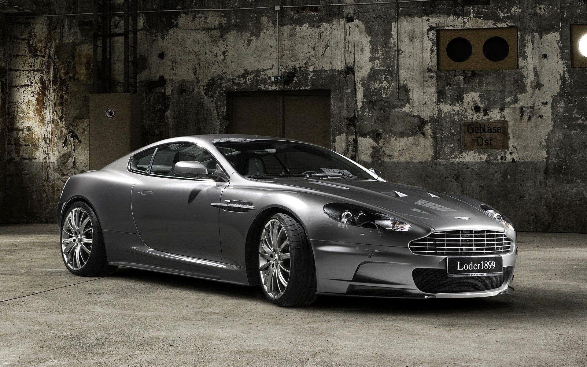

Características
- Motor: V12 de 5.9 litros
- Potencia: 450 caballos de fuerza
- Aceleración (0-100 km/h): 4.9 segundos
- Velocidad máxima: 306 km/h
- Transmisión: Automática de 6 velocidades
- Suspensión: Independiente en las cuatro ruedas
- Frenos: Discos ventilados en las cuatro ruedas con ABS
- Neumáticos: Bridgestone Potenza

Descripción
El Aston Martin DB9 es un automóvil deportivo de lujo fabricado por la marca británica Aston Martin. Presentado en 2004, el DB9 es conocido por su elegante diseño, altas prestaciones y lujo refinado.
El motor V12 de 5.9 litros produce una impresionante potencia de 450 caballos, permitiendo una aceleración rápida y una velocidad máxima emocionante. La transmisión automática de 6 velocidades ofrece cambios suaves y precisos, mientras que la suspensión independiente en las cuatro ruedas garantiza un manejo deportivo y confortable en cualquier tipo de carretera.